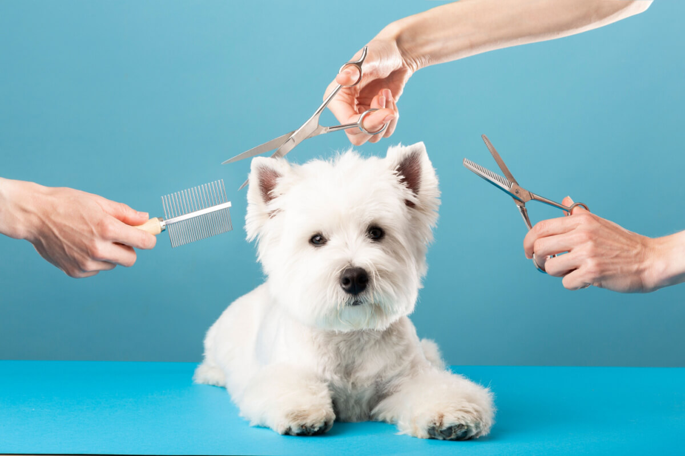
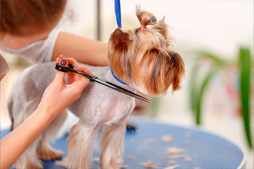
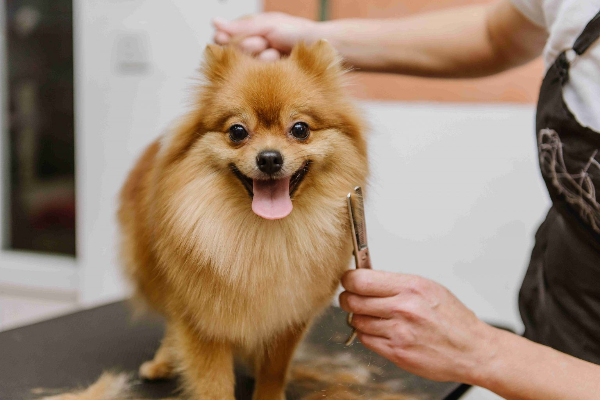

Tipos de Tosa
Veja nossa variedade e escolha a melhor para seu animalzinho
Tosas para seu cachorro
Tosa higiênica
A tosa higiênica é um procedimento essencial nos cuidados de cães e, em alguns casos, gatos. Diferente da tosa estética, que visa um corte específico para a raça ou um visual desejado, a tosa higiênica tem como principal objetivo garantir o bem-estar, a saúde e a limpeza do seu pet. É um corte focado em áreas estratégicas do corpo que tendem a acumular mais sujeira, umidade e, consequentemente, facilitar a proliferação de bactérias, fungos e parasitas.
Tosa na tesoura
A tosa na tesoura é uma técnica de tosa que utiliza exclusivamente tesouras (sem máquinas de tosa) para cortar e modelar a pelagem do pet. É um serviço que exige maior habilidade, tempo e precisão do tosador, sendo frequentemente considerado uma técnica premium.
Tosa na máquina

A tosa na máquina é o método mais comum e eficiente para aparar a pelagem de cães e gatos. Utilizando máquinas elétricas com diferentes lâminas (também chamadas de pentes ou snaps), ela oferece praticidade, uniformidade e rapidez ao procedimento.
Tosa leão
A Tosa Leão (Lion Cut) é um estilo de tosa radical e altamente distintivo, muito popular, especialmente entre os gatos de pelo longo (como o Persa ou o Maine Coon), mas também aplicada em algumas raças de cães. Seu nome é autoexplicativo: o objetivo é deixar o animal com a aparência de um leão.
Tosa bebê

A Tosa Bebê (Puppy Cut), ou tosa filhote, é um dos estilos de corte mais populares, especialmente para raças pequenas e médias de pelos longos e encaracolados (como Poodles, Bichons Frisés, Malteses e Shih Tzus). Este estilo é chamado de "bebê" porque o objetivo é deixar o pet com uma aparência jovem, fofa e arredondada, remetendo ao visual de um filhote.